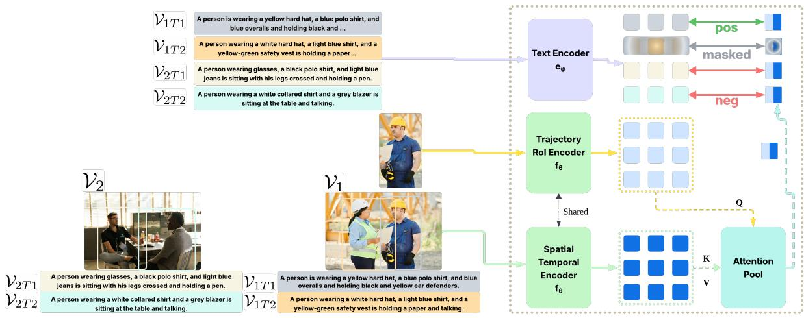

InstAP: Instance-Aware Vision-Language Pre-Train for Spatial-Temporal Understanding Ashutosh Kumar, Rajat Saini, Jingjing Pan, Mustafa Erdogan, Mingfang Zhang, Betty Le Dem, Norimasa Kobori, Quan Kong CVPR 2026 Open Access + arXiv 原文链接
编号2604.08337优先级P1类别CVPR 2026 Open Access + arXiv会议CVPR 2026 Open Access + arXiv方法联合优化全局图文对齐和实例级 contrastive alignment，把文本 mention grounding 到图像/视频的具体时空区域。来源arXiv / OpenReview
INSTVL: REGION/TRAJECTORY INSTANCE VISION-LANGUAGE DATASET Figure 1INSTVL: REGION/TRAJECTORY INSTANCE VISION-LANGUAGE DATASET Figure 1. Conceptual overview of the InstAP framework and InstVL dataset. Left: InstVL features dual-granularity video annotations: holistic Global Captions and entity-grounded Trajectory Instance Captions. Right: InstAP fuses global and instance-level features via Global-Local Cross Attention, optimizing through joint Global and Instance-Aware Alignment objectives.这张图概括 InstAP 的整体方法流程。阅读时先看模块之间传递的训练信号，再看作者如何把目标拆成可优化的子问题。

Figureure 3 · Our instance-aware alignment mechanismFigure 3. Our instance-aware alignment mechanism. Instance features (Query Q) from a Trajectory RoI Encoder $\left( f _ { \theta } \right)$ are fused with global context (Key K, Value V ) via an Attention Pool to create an instance-aware embedding. This embedding is contrasted with text features $( e _ { \phi } )$ . The loss forces the model to match positive pairs $\left( V _ { 1 T 1 } \right)$ while contrasting against negatives from different videos $( V _ { 2 T 1 } / V _ { 2 T 2 } )$ and masking potential false-negative pairs from the same video $\left( V _ { 1 T 2 } \right)$ , enforcing fine-grained discrimination (Eq. 8).这张可视化用来解释 InstAP 学到的中间表征或对齐关系。重点看它是否支持正文里的机制判断。